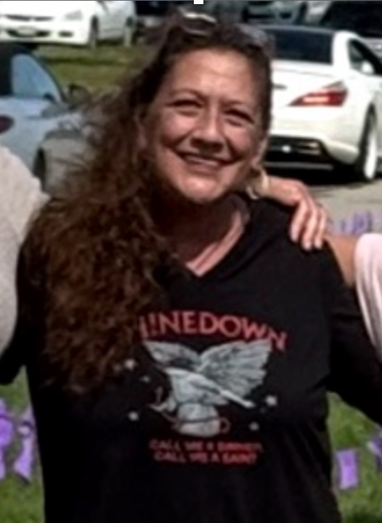
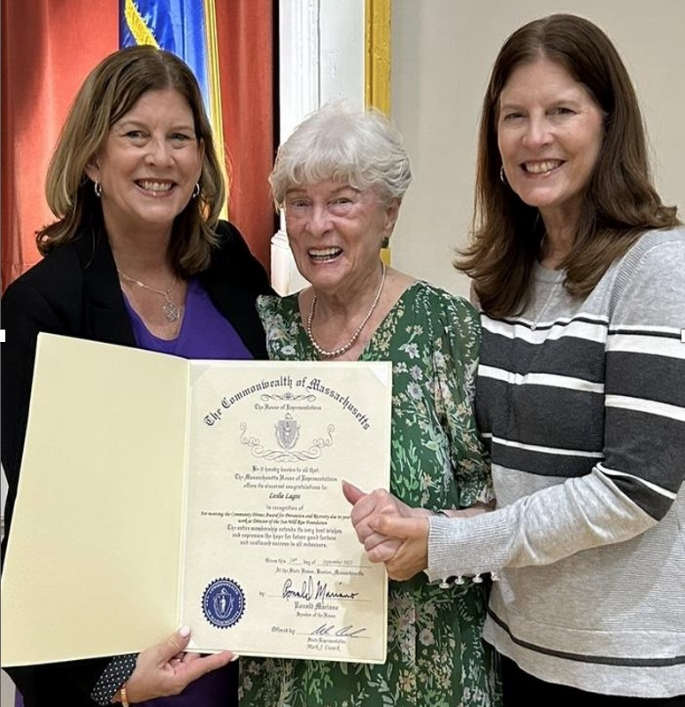
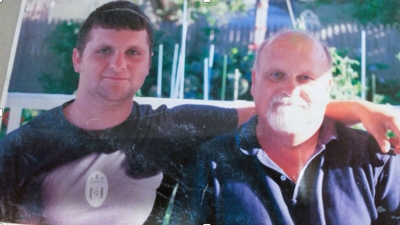
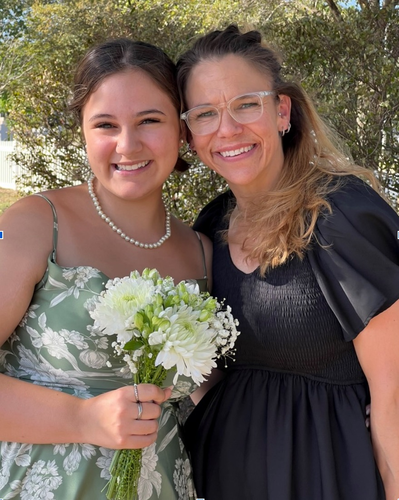
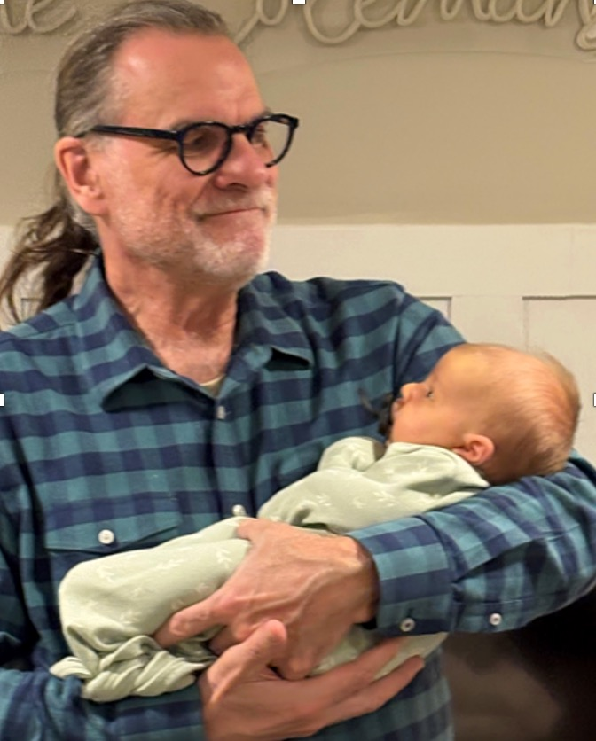

I am a dedicated peer support specialist, walking alongside individuals navigating grief, recovery, and the complexities that come with both. My passion for this work is deeply personal. I have experienced the loss of people I love to Substance Use Disorder, and my own journey through addiction has shaped the way I show up for others—with empathy, honesty, and understanding. Today, I am grateful to be in recovery for four years.
I currently serve as a facilitator with the Sun Will Rise Foundation and have been part of SADOD since 2020, where I’ve gained invaluable experience supporting individuals from all walks of life. In addition to this work, I facilitate groups centered on mental health, codependency, and domestic violence, creating spaces where people feel seen, heard, and supported.
I believe that healing happens in connection. Peer support offers a sense of belonging that many of us have searched for, and it is an honor to be part of that process. Every person I walk with reminds me that recovery is possible, and that none of us have to do it alone.
Melissa Hardeman-Lezynski

I am a peer grief support specialist with lived experience in both profound loss and recovery. After the death of my son Sean, I found purpose and healing walking alongside others navigating grief, especially those impacted by substance use.
My approach is deeply heart-centered. I meet people exactly where they are, without expectation or pressure to “move on,” recognizing that grief and recovery are layered and deeply personal, nonlinear experiences. I also believe that recovery means something different to everyone.
Guided by principles of harm reduction, dignity, and connection, I believe grief is not something to fix, but something to be honored and carried with support. I am committed to reducing stigma and building trust, ensuring that no one has to navigate loss alone. My work is grounded in the belief that healing happens in relationships and that even in deep grief, connection can be the light in the darkness that can help us make it through.
This picture is from August 2025. We were placing over 1,000 purple flags for those lost to overdose.
Leslie Lagos

My journey through recovery has shown me the incredible power of peer support and provided me with an invaluable bond when I suffered the death of my brother, Timmy.
Following Timmy’s death, discovering The Sun Will Rise connected me with a community dedicated to peer grief support for people navigating a complex and devastating death from a substance-use-related cause. I know how meaningful it can be to have the support of people who truly get it.
In 2022, I became a peer grief helper and the director of The Sun Will Rise. I manage our support group network and lead TSWR’s longtime collaboration with SADOD, I am privileged to be part of a peer helping and learning community, daily offering and receiving life-changing support.
Timmy continues to shine on within me and through me as I help others find hope, healing, and happiness on the interconnected journeys of recovery and grief.
If you pre-register for our peer grief support groups, we will surely encounter each other one day, and I look forward to walking this journey together.
My mom is very proud of my recovery and the work my twin sister and I do in her son’s honor.
David Swindell

I am a bereaved father. My son Christopher died in 2018 due to substance use. I am also a person in long-term recovery whose story of substance use and recovery is woven into my being. I discovered the world of peer support during Chris’ journey, and I have found it a tremendous lifeline for both myself and others.
I became both a peer grief support group facilitator and one-on-one peer grief ally while also being active at Chris’ Corner Recovery Resource Center and various sober homes after Chris’ death. My focus is to reduce the stigma associated with substance use and for those that have died and their families.
I have a drive to help lessen people’s feeling of isolation, to make connections, and to sit and mindfully listen whole-heartedly to those that wish or need to share—and to offer my thoughts my journey if asked.
My story is also told in a profile of me in the VOICES newsletter.
Olivia Thuringer

I am only 19 years old, but my life has been rich with the ebbs and flows of Substance Use Disorder and grief. My mother, Tavyn, struggled with addiction for most of my childhood and I was directly impacted in every aspect of my life. I am grateful to say that everyone I love with this disorder is in recovery, but I am painfully aware of what it is like to walk beside someone in active use.
If there is one thing my life has taught me it is that we are not meant to do it alone. The unconditional support that I have received from the people at SADOD and TSWR is what made me so passionate about beginning my work here. That is because it made it obvious that together is the only way we will make it through our darkest moments.
I do not take it lightly that I am now in a position where I can offer support to those in need. I am honored that you trust me to walk through your journey with you.
Franklin James Cook

Day by day, I have been in recovery for a long time. My father, Joseph Hickman Cook, died in 1978 from suicide, and his death was directly caused by lifelong, daily, excessive use of alcohol. I am open to listening to anyone tell me whatever they’d like to share with me about their path to recovery, and I am open to sharing with anyone what I have to say about my path to recovery.
I have been a Peer Grief Helper since 1999. At first, I worked only with survivors of suicide loss, and in 2017, I began to also work with people grieving a death caused by alcohol and other drugs. I do my work in honor and memory of my father (and because I first went to a Peer Grief Support Group at a time when I was suffering terribly, 20 years after my dad died, and it changed my life).
This picture is of me with my first great-grandchild, Violet Marie Coleman.